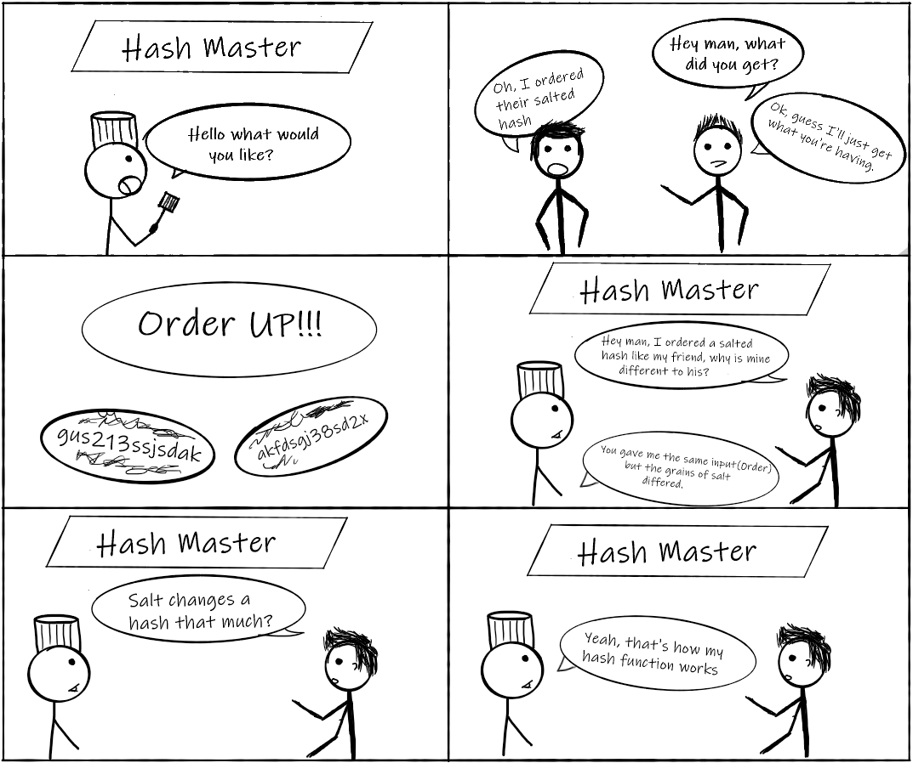

What is a Hashing?
Hashing is a ONE-WAY process used to convert an input of any length into a fixed length string of text with the
use of an algorithm (hash function). Since it is a one-way process, there is a lot less potential harm as hashing makes it more difficult for attackers
to obtain valuable information, if there was a case that your database were to be compromised/breached.
What do you mean one-way?
Hashing is a one-way process in the sense that providing the input will give you the ourput, but having the output hash will not tell you anything about
what input was used to create the hash.
How do you use it if it is one-way?
Often when hashes are used and stores in any type of system, instead of getting the value from your database and checking if it matches what
the user inputted, instead it takes what the user inputted and passes it through a hash function then checks the database if it is present in the
appropriate section(proper password hash for specific user).
Properties Of (Good) Hash Functions
We said earlier that to create hashes we use functions like SHA-256 (Secure Hash Algorithm, which translates all inputs into a 256 bit string). However,
we can't just use any function; there are some properties that we should uphold when creating hashes.
- Deterministic: No matter how many times you input the same data you will always get the same
hash output. If this were not the case then it would be pretty much impossible to keep track of what these hashes mean/represent.
- Pre-Image Resistant: Infeasible (but not impossible) to determine the input data based on the output hash. Attacker would have to use
the brute force method when attempting to obtain the plaintext input.
- A Small Change in Input Changes Whole Hash: No matter how small of a change in the input
it will result in a large change on the outputted hash. This will help maintain the pre-image resistance from above
as even if the guess was close to the plaintext the hash output would be totally different.
- Collision Resistant: Although not all hash functions are completely resistant to collisions
(2 different inputs have same resulting output), a hash function is said to be collision resistant if it is hard to find
two inputs that hash to the same output.
Example Of When It Would be Helpful
Imagine you are creating an website and using MySQL as the database for your site. Your site involves having users
Login via username and password.
Rather than storing the usernames and passwords as plain text, you could/should probably store something like a hash. So IF your
database were breached via lets say SQL injections
(
example video of how SQL injections works here by Computerphile) then
instead of providing the attackers with a list of usernames and passwords which they could imediately use, they would get a list of
hashes which would take much longer for them to make use of because they would need to brute force it try to figure out what the plain text is.
This is the case because a small change in input could create a large change in the hash and therefore they cannot try to find patterns within the hash.
Add Some Security with some Salt
Salting when it comes to hashing is the process of concatenating the input with a "salt"
so that even if 2 users had the same passwords and then they were salted then they would show up as 2 different hashes
(unless you get the case in which the input is the same AND the generated salt is also the same), as we discussed earlier a small
change in the input can create a very large difference in the resulting hash output.

Encryption VS Hashing
The key difference bewteen cryptographic hashing and encryption is that hashing is a one-way process, while
encryption is a two-way process. This entails that using the output hash, one cannot use it to figure out what
the initial plaintext input was, but when it comes to an encrypted ciphertext using the cipher used (the key),
one can decrypt the ciphertext to obtain the inital plaintext input.

This work is licensed under a
Creative Commons Attribution 4.0 International License.